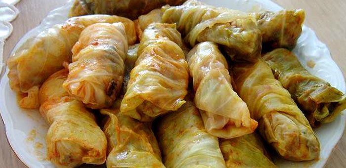

Sarma recipe

Sarma is traditional Greece, Serbian and Turkey dish, very popular on Balkan.
Sarma is mostly eaten in Autumn.
The main ingredient of Sarma are:
- Sour cabbage
- Minced meat
- Rice
How to make Sarma:
- Remove one leaf at a time from the smaller heads of sauerkraut, cut off the thicker ribs with a knife and wash them well in cold water.
- Clean the meat from the veins and grind. Put 100 g of fat, minced meat and chopped onion in the pan, then fry a little. Add rice, a little ground pepper, one egg and salt to taste, and mix everything well.
- Arrange a few cabbage leaves on the bottom of the larger sherpa. Take, one by one, a cabbage leaf, put one spoonful of meat filling on each one and wrap the leaves in small firm rolls. Pull the ends of the cabbage well, so that the hope does not fall out during cooking. Arrange the sarma in a sherpa, side by side, in several rows. Wash the dried meat and bacon in hot water, cut it into pieces, and place it between the rows of sarma. Add 5-6 peppercorns and 2 bay leaves. Pour cold water over the sarma and cook on low heat for about 3-4 hours. In a pan, make a powder of 50 g of fat, a spoonful of flour and one teaspoon of allspice, pour over the sarma, cover the sherpa and let it boil for another half an hour. Instead of bread with sarma, serve proja.
- Sarma is readdy for serving.
Get back to other recipes.